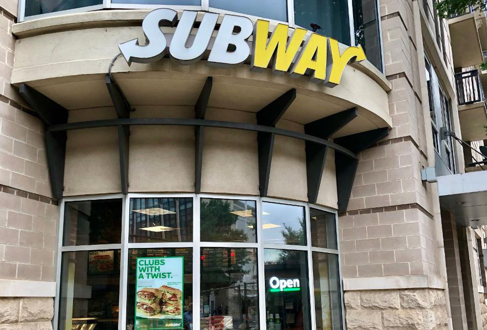
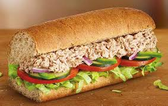
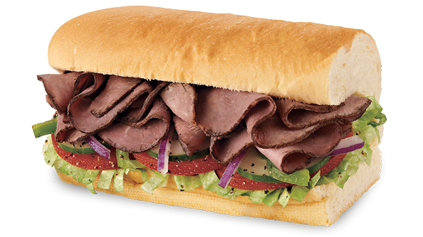
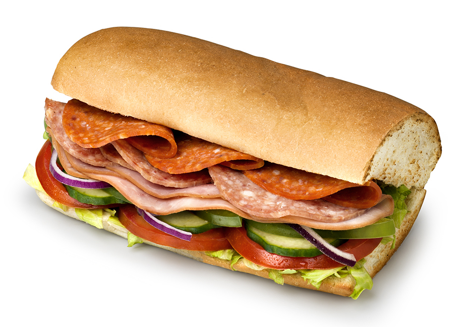
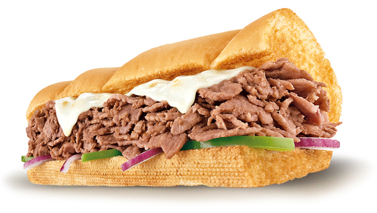

Subway is an American privately held restaurant franchise that primarily sells submarine sandwiches and salads. Subway is one of the fastest-growing franchises in the world and, as of June 2017, had approximately 42,000 stores located in more than 100 countries
It happens millions of times each week – a customer receives a drink from a Starbucks barista – but each interaction is unique.
Sandwiches :
| Tuna Classic R45.50 |
Roast Beef $3.75 |
Italian B.M.T.® $4.55 |
Steak & Cheese $4.67 |
|---|---|---|---|
|  |  |  |  |
| Our Tuna sandwich is simply delish. Flaked tuna blended with mayo, topped with your choice of veggies. Make it what you want ™. | Our Roast Beef sandwich has lean, sliced beef piled up high, then topped with crisp, crunchy veggies. Oh, and it's one of eight six-inch Fresh Fit™ subs with two servings of crisp veggies on freshly baked bread for under 400 calories.. | The Italian B.M.T.® sandwich is filled with Genoa salami, spicy pepperoni, and Black Forest Ham. Big. Meaty. Tasty. Get it. | Our Steak & Cheese sandwich is where warm, delicious steak gets topped with melty cheesiness. Get crazy with veggies and sauces to make it what you want. |